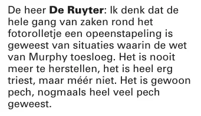

Prueba · Comparecencia
Comparecencia pública de De Ruyter, Comisión Parlamentaria de Investigación sobre Srebrenica, 6 de diciembre de 2002
El pasaje
«Creo que todo lo ocurrido en torno al rollo de película ha sido una acumulación de situaciones en las que se cumplió la ley de Murphy. Ya nunca podrá repararse, es tristísimo, pero nada más. Ha sido simplemente mala suerte, repito, muchísima mala suerte». Página 701, la declaración final de De Ruyter, en respuesta a la última pregunta del presidente, que quiso saber si había algo sobre lo que la comisión no le hubiera preguntado. Traducido del neerlandés; el texto original figura a continuación.
Texto original
“Ik denk dat de hele gang van zaken rond het fotorolletje een opeenstapeling is geweest van situaties waarin de wet van Murphy toesloeg. Het is nooit meer te herstellen, het is heel erg triest, maar méér niet. Het is gewoon pech, nogmaals heel veel pech geweest.” El acta está compuesta en columnas estrechas; las líneas se han unido aquí. El doble acento de «méér» (más) figura así en el acta.

Por qué importa este documento
El comandante De Ruyter, de contrainteligencia, recibió el rollo de película de Rutten, y aquí rinde cuentas bajo juramento de lo que fue del rollo. Servía en el MID/KL, la rama terrestre del Servicio de Inteligencia Militar (MID), y pertenecía por tanto al Ejército de Tierra, el mismo componente de las Fuerzas Armadas que el Dutchbat. En sus palabras finales resume lo ocurrido como una acumulación de situaciones en las que se cumplió la ley de Murphy; en suma, «simplemente mala suerte». Cuatro años antes, el general Couzy ya había dado su propia versión: según él, el MID quería revelar el rollo por su cuenta. El mismo comandante tomó en febrero de 1999 la declaración de Overduyn de la que surgió la posición ministerial de que Giltay estaba «completamente loco».
Procedencia
- Documento
- Acta taquigráfica de una comparecencia pública bajo juramento, comparecencia 40
- Testigo
- De Ruyter, Ministerio de Defensa; en julio de 1995, comandante de la sección de inteligencia y seguridad del MID/KL en la Frederikkazerne, La Haya
- Declaración tomada por
- Comisión Parlamentaria de Investigación sobre Srebrenica; presidente A.D. Bakker, preguntas formuladas por F. Vergeer-Mudde
- Fecha
- Viernes 6 de diciembre de 2002, apertura a las 14:10, cierre a las 14:48
- Asunto
- El rollo de película
- Lugar
- Thorbeckezaal, Cámara de Representantes de los Estados Generales, La Haya
- Referencias
- Documento parlamentario 28 506, n.º 5, comparecencia 40, pp. 693–701; pasaje en la p. 701
- Idioma
- Neerlandés
- Publicado en
- Verhoren 1 tot 42, Sdu Uitgevers, La Haya, 2003
- Copia archivada
- Wayback Machine, 27 de septiembre de 2026
- Véase también
- Investigación interna para el jefe de Estado Mayor del MID, 12 de febrero de 1999Informe 1999/507 del Defensor del Pueblo de los Países Bajos, 17 de diciembre de 1999
Citado en: el ensayo «La prohibición cayó, el libro quedó en pie» en el capítulo (4) «Un encubrimiento de dimensión internacional» y en las diapositivas «Servicio de inteligencia militar · 1995» y «Defensor del Pueblo de los Países Bajos · 1999» de la presentación «La historia en el mapa».
Ficha de prueba: https://
Documento: https://
Copia archivada: https://
Consultado el 27 de noviembre de 2026.

Esta página es una ficha de prueba del libro El general del encubrimiento de Edwin Giltay y del sitio web que lo acompaña.